A região que abriga a maior reserva de água doce e a maior biodiversidade do planeta está ameaçada. E, para ter uma ideia de como isso pode afetar a vida de todos nós (em qualquer canto do Brasil e do planeta), vou te contar uma história…
Role a página para começar

Francisco estava na casa dele em um dia de verão e deu aquela sede…
Oi, Sandra! Aqui em Itu não temos água na torneira e faz um calorão.
Sério? Quero descobrir porquê! Vou aproveitar meu poder do teletransporte e ir até lá. Valeu, Sandra!
Ué, Aqui em Ilhéus ainda tem. Minha tia me disse que essa secura aí no Sudeste pode ser por causa da Amazônia.
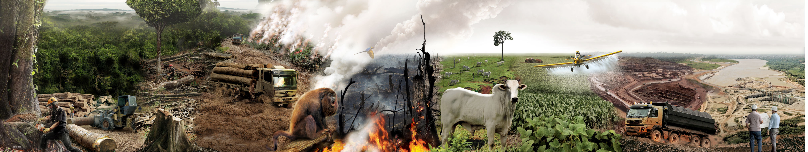
Essa não! A floresta está sendo devastada.
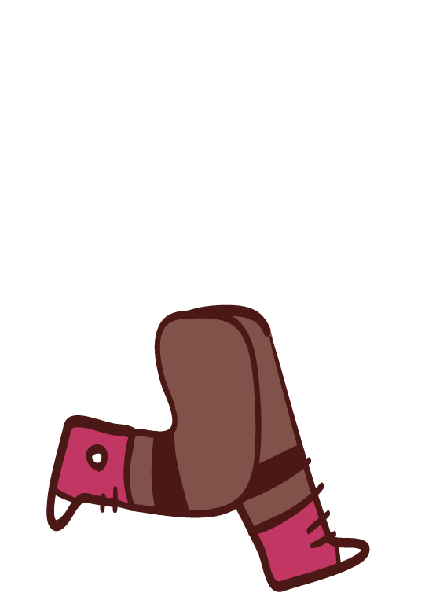
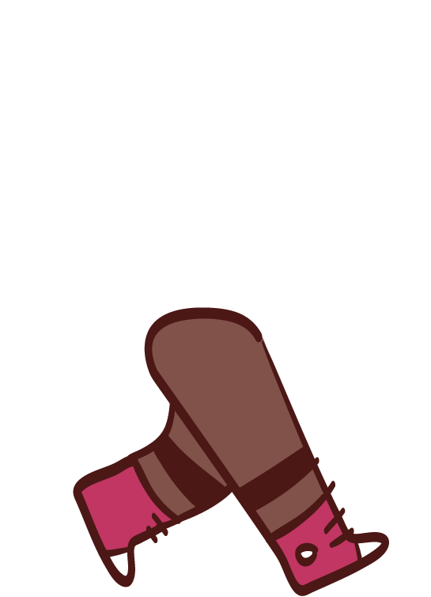
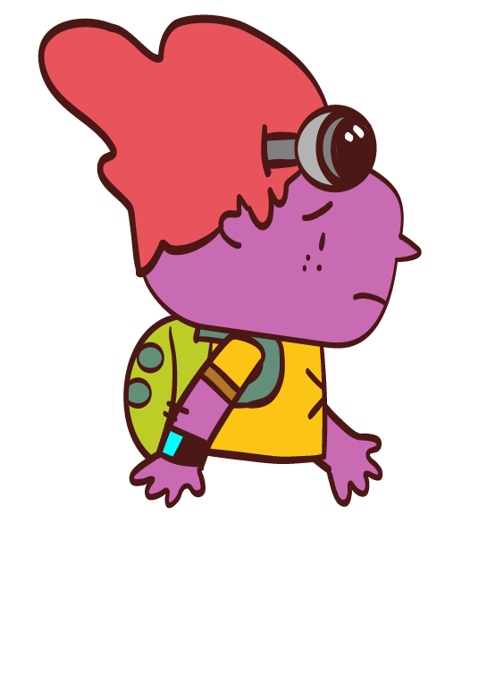
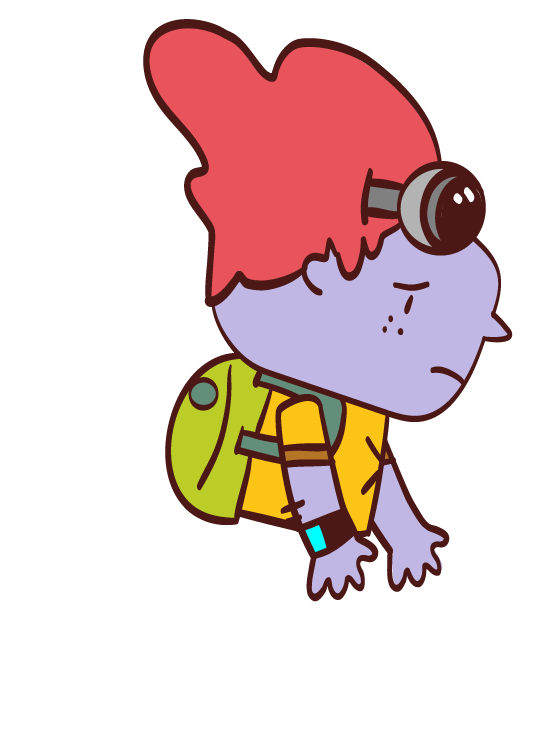
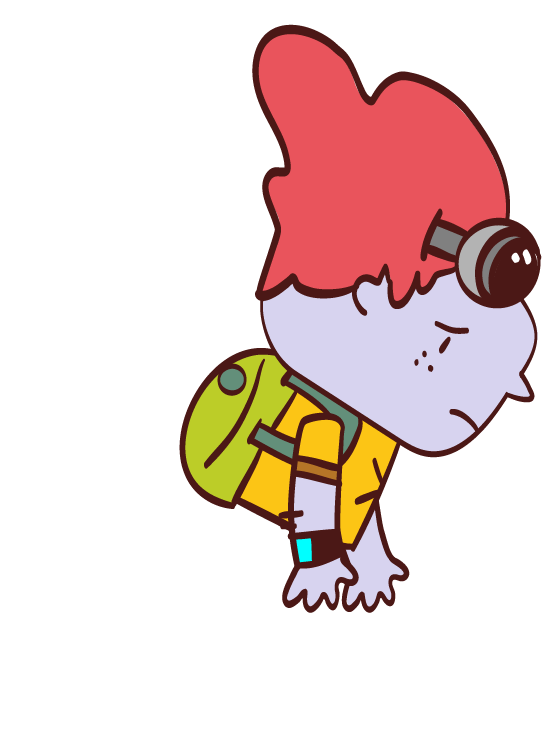
Ei, você está bem? Tá indo pra onde?
Vim tentar descobrir por que está faltando água lá em casa. Mas encontrei muitos outros problemas e minhas forças estão se acabando.
Já sei! Vou te ajudar. Venha comigo e você vai ver outro lado da Amazônia.
Madeira Ilegal - Árvores muito grandes e antigas são cortadas para serem vendidas nas grandes cidades. Essa derrubada é o começo da degradação da floresta, é como se um trator passasse por cima das plantas.
Cortar caminho - Cerca de 60% do desmatamento é feito para criar novas estradas por dentro da Amazônia. Essas estradas, por sua vez, abrem caminho para mais degradação.
Em chamas - Depois de tirarem a madeira mais valiosa, muitas vezes põem fogo para eliminar o resto da vegetação para implantar a agropecuária. O solo fica ainda mais prejudicado, nem os animais escapam. As queimadas causam danos praticamente irreversíveis e pioram as emissões de gás carbônico (CO2), um gás que aquece a atmosfera.
Passa boi, passa boiada - Criação de gado é a principal atividade econômica em áreas desmatadas. A pecuária causa a compactação do solo e contribui para a emissão de Gases de Efeito Estufa.
Agricultura - As enormes plantações, principalmente de soja, milho e algodão, avançam cada vez mais sobre a Amazônia. A monocultura é responsável pela contaminação da água e do solo por agrotóxico.
Tesouros da terra - Mineradoras de alumínio, minério de ferro e ouro, entre outros metais, poluem as águas, ameaçam a biodiversidade, desorganizam os caminhos das águas e alteram todo o relevo. Onde havia morro, hoje não tem mais. Esses impactos não podem ser revertidos.
Força das águas - Para instalar uma hidrelétrica no rio é necessário inundar e desmatar uma grande área. Impacta centenas de milhares de quilômetros quadrados de florestas e ainda desaloja as comunidades que vivem por ali.
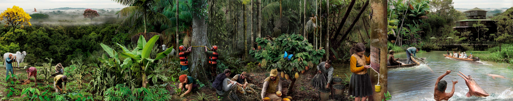
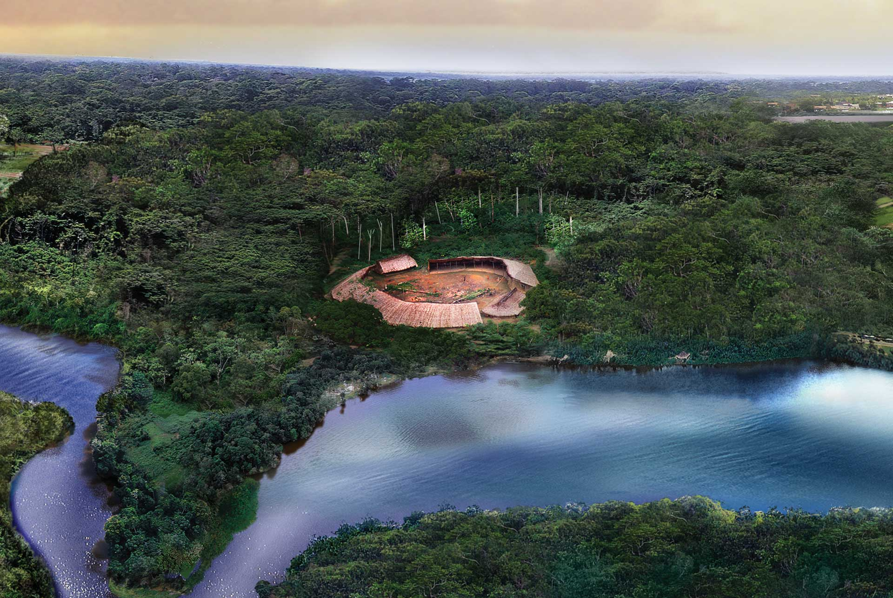
 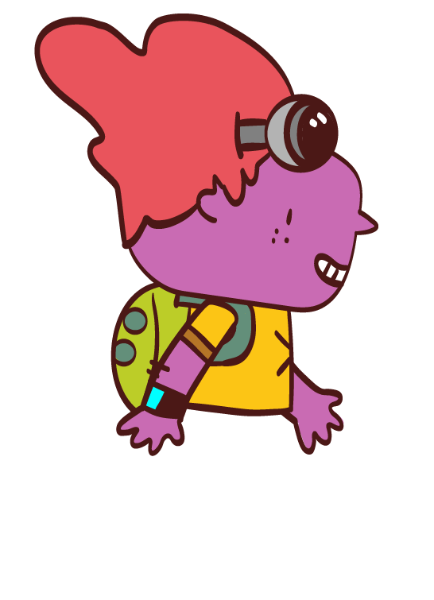
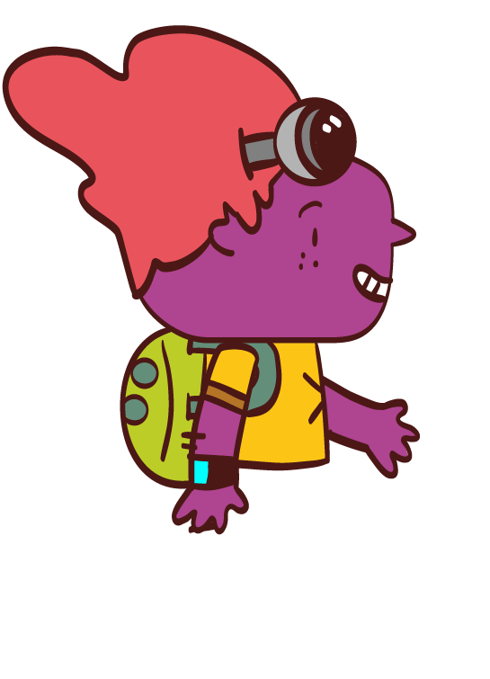
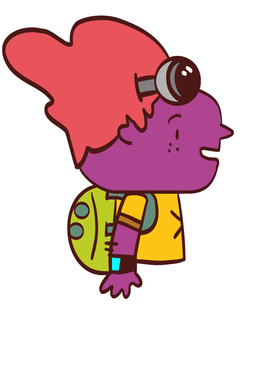
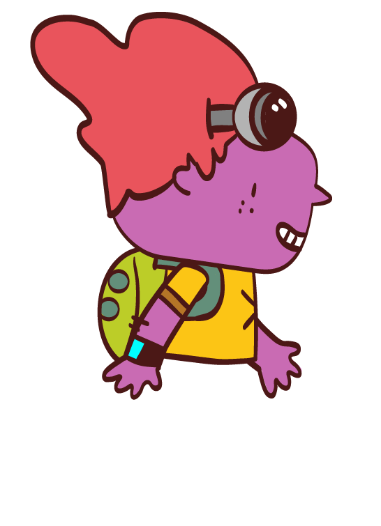
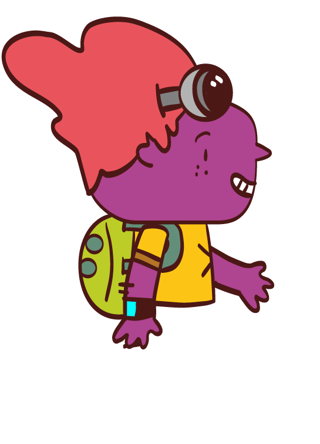
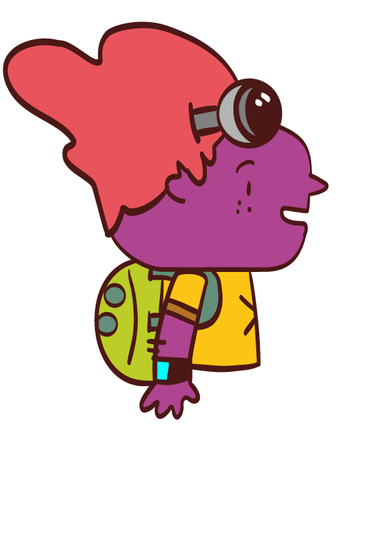
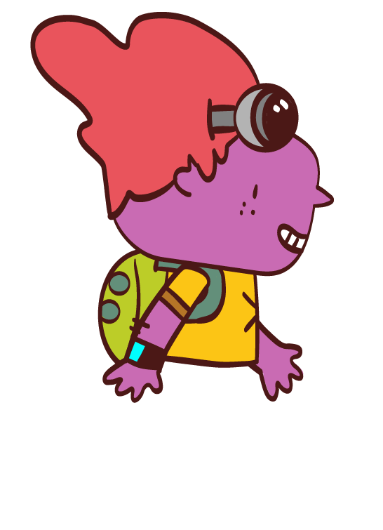
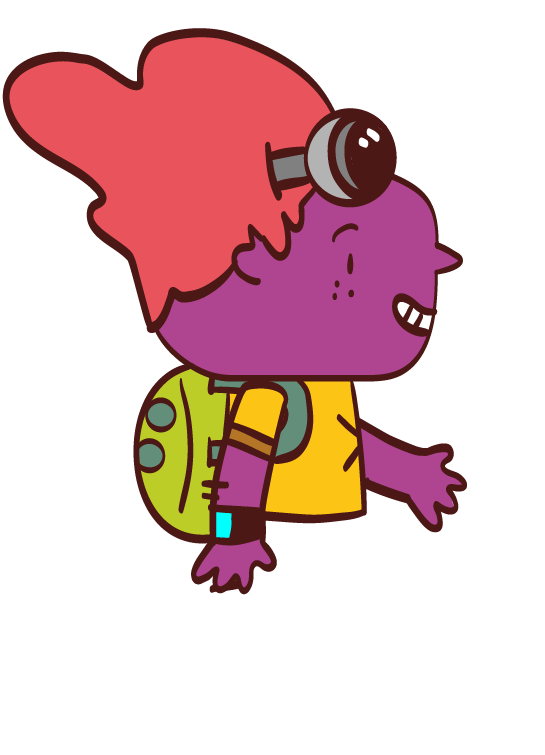
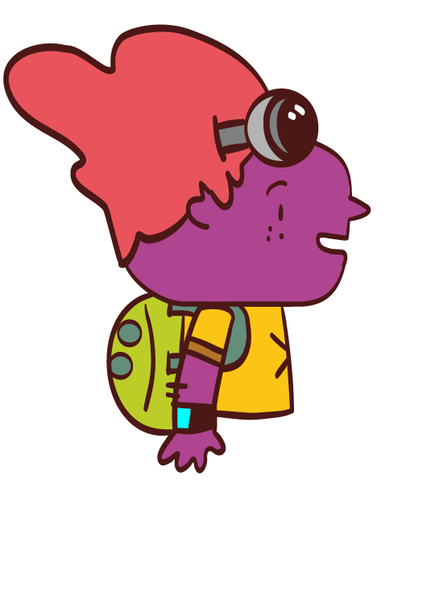
Essa é uma Amazônia bem diferente!
E como! Temos muitas riquezas para você descobrir. A floresta é cheia de poderes quando está em pé.
Além de tudo isso, existem os povos indígenas que estão mais para dentro da floresta
Agricultura orgânica - Frutas, verduras e hortaliças podem ser cultivadas na floresta sem agrotóxicos. Esse tipo de cultivo recupera solos pobres em nutrientes e contribui para o sustento das famílias.
Madeira certificada - Plantar para colher sem degradar. As árvores retiradas são de terrenos já degradados que passaram por um processo de manejo planejado com árvores nativas.
Pesquisa científica - Estudos sobre as espécies de animais, plantas e fungos são fundamentais para a conservação da floresta. Muitos medicamentos também são produzidos com substâncias encontradas nas florestas.
Sistema agroflorestal - É praticado pelos povos indígenas e pelas comunidades tradicionais. As plantas nativas (como guaraná, açaí, cupuaçu e cacau) e até as que vieram do exterior (como banana, laranja, carambola e abacate) são produzidas em meio à floresta, aproveitando toda a abundância que a terra dá.
Extrativismo - Sementes, frutas e até seiva das árvores, como o látex, podem ser retiradas da Amazônia sem prejudicar os ecossistemas. Já comeu castanha-do-brasil? E açaí?
Pesca - Há milhares de peixes nas águas da Amazônia. Sabendo quando pescar, não vai faltar.
Turismo sustentável - Hospedagens no meio da mata, passeios de barco e visitas às aldeias indígenas são exemplos de atividades econômicas que atraem turistas. Mas sempre respeitando os limites do lugar, sem lotar.
Povos indígenas - Existem mais de 300 Terras Indígenas na Amazônia brasileira. Mais da metade dos povos indígenas do Brasil vivem na região. Seu modo de vida conserva a floresta em pé e dessa forma contribui para a sustentabilidade. Vivendo da floresta esses povos abrem pequenas clareiras quando roçam e usam as florestas, de modo a permitir a regeneração natural por séculos.
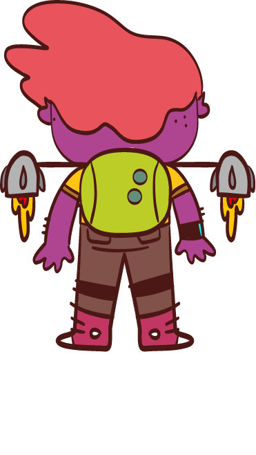
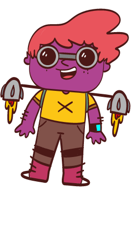
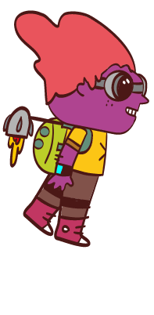
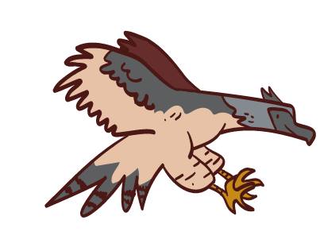
Quanta coisa interessante acontece na Amazônia! Recuperei minhas forças. Mas ainda não sei por que está faltando água lá em casa…
Tenho uma amiga que pode saber, vamos nos embrenhar na mata até encontrá-la!
Vamos subir! Minha amiga mora lá em cima, no alto das árvores.
Aí está a harpia! Use seu poder de voo e verá como a Amazônia influencia as chuvas de todo o continente.
Adeus, amigo! Nos ajude a cuidar da floresta!
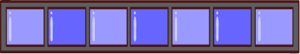
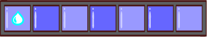
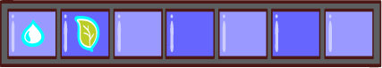
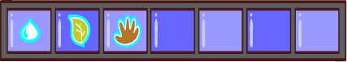
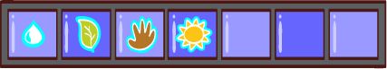
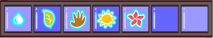
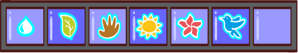
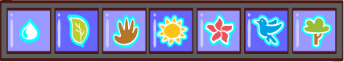

A floresta Amazônica não está só no Brasil, encontramos esse domínio ecológico em mais oito países da América do Sul: Guiana Francesa, Suriname, Guiana, Venezuela, Colômbia, Equador, Peru e Bolívia. Além da floresta densa, há florestas estacionais, de igapó, campos alagados, florestas que ficam cobertas de água em certas épocas do ano e até savanas. Por isso falamos em “florestas amazônicas”, afinal, são bem diferentes entre si.
Água - É muita água correndo por ali. A bacia hidrográfica do rio Amazonas abriga 20% da água doce do planeta.
Serapilheira - Folhas e material orgânico vão se acumulando no chão. Com o passar do tempo entram em decomposição e formam um ótimo nutriente para a própria floresta.
Povos da floresta - Além dos indígenas, as populações tradicionais — como ribeirinhos, seringueiros aprenderam a utilizar os recursos da floresta sem degradar. Dela retiram seus alimentos e medicamentos.
Luminosidade - Sabia que no chão da Amazônia só chegam cerca de 2% de toda a luz do Sol? O dossel bem fechado filtra a alta taxa de radiação solar, deixando o solo fresco e protegido.
Sub-bosque - Sem muita luz, as plantas abaixo das copas das árvores não crescem muito, são plantas de sombra mesmo deixando espaço para caminhar entre elas. Bromélias, cipós, orquídeas e árvores mais jovens também ocupam essa parte da floresta.
Dossel - O conjunto das copas das árvores forma como se fosse um grande tapete visto de cima. Serve de hábitat para a maioria dos animais da floresta, como insetos, pássaros e macacos. Por ser superdenso, a maior parte dos raios solares é absorvida ali mesmo e não chega ao chão da floresta.
Gigantes - As árvores mais altas, chamadas de emergentes, aparecem acima do dossel e chegam a 80 metros, altura de um prédio de quase 30 andares!.

Quanta árvore dá pra ver daqui de cima!
Opa! Cheguei na minha casa. Valeu, harpia! Fico por aqui. Falou!
Acima do dossel tudo muda, mais ventos, radiação solar e chuvas. Chove muito na Amazônia, é uma terra bem úmida. Mas boa parte dessa água toda volta para o céu.
As árvores e os solos absorvem a água da chuva e depois a devolvem na forma de vapor, um processo chamado evapotranspiração.
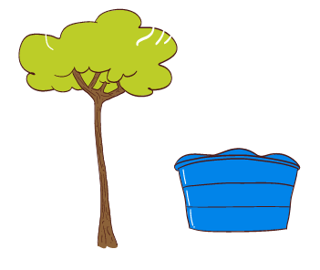
Uma única grande árvore chega a liberar 1000 litros de água por dia, uma caixa-d’água!
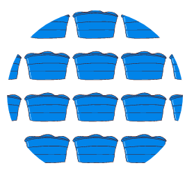
Agora imagine tudo isso de floresta enviando tudo isso de água para o céu. Estima-se que sejam 17 trilhões de litros por dia! É mais do que a água toda que o Rio Amazonas libera no mar em sua foz.
Os ventos, chamados de correntes de ar, vão em direção à Cordilheira dos Andes e depois se desviam para o Sudeste do Brasil. Por isso algumas regiões do país podem sofrer com a seca se a floresta continuar a ser desmatada.
Ainda bem que a água voltou! Mas no futuro, não sei, não... Isso não pode continuar assim!
O que a gente pode fazer pela Amazônia?
Acompanhe o que está acontecendo na Amazônia e use as redes sociais para mobilizar os seus amigos a fazer o mesmo. Conte o que aprendeu sobre sustentabilidade na Amazônia!
Evite produtos de áreas de desmatamento, como carne e grãos cultivados nessas terras.
Incentive atividades econômicas sustentáveis, consumindo produtos da floresta em pé.
Oi, Sandra. Descobri que boa parte da água das chuvas por aqui vem lá da Amazônia, por isso a falta de água também pode estar relacionada com o desmatamento da floresta. Os problemas por lá são muito maiores do que eu imaginava.
Sério?
Sério! As consequências da destruição da floresta podem ser gravíssimas para todo mundo. Muita gente já está sofrendo, além das espécies de plantas e animais que estamos perdendo.
Isso não é nada bom…
Deve ter alguma coisa que a gente possa fazer. Vamos pesquisar?
- Coordenação Pedagógica
Profa. Dra. Sueli Angelo Furlan - Gestão de projeto
Stella Mendes Fischer - Direção de Arte
Estúdio Egg - Coordenação de produção
Diana Salles - Roteiro
Gabriela Saraceni - Revisão
Ivana Traversin - Ilustrações
Amazônia: Luiz Iria
Rios Voadores: Sattu
Demais ilustrações: Thiago Egg - Programação
Fernando Gatti - Material produzido por
Atina Educação - Em parceria com
Cenpec - Licença